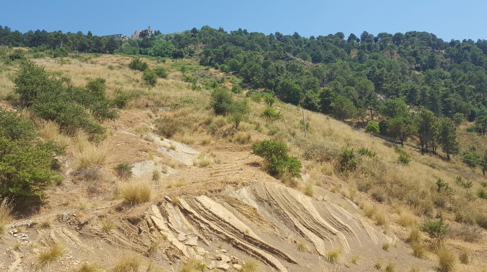

Flysch tettonizzato

ITALIANO - Affioramento arenaceo quarzoso con intercalazioni argillo‐marnose di color tabacco, piegato secondo strutture anticlinali che ne caratterizzano spettacolarmente la forma e ne consentono la spiegazione, frutto della neotettonica madonita. (Oligocene sup. ‐ Miocene inf.)
INGLESE - I am Gaetano Ferrarelli